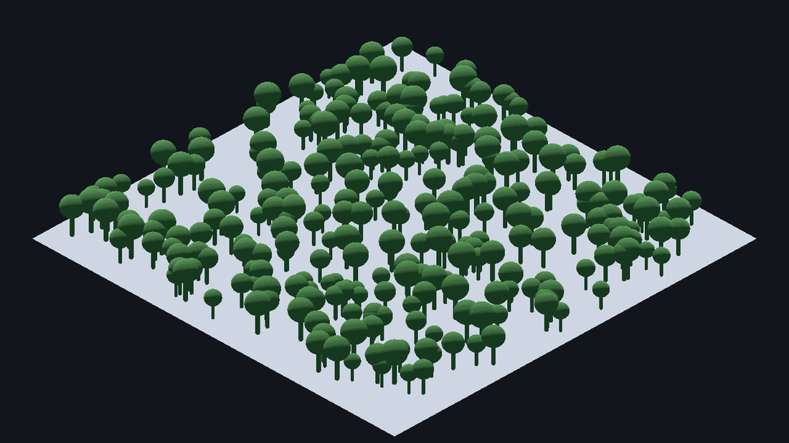
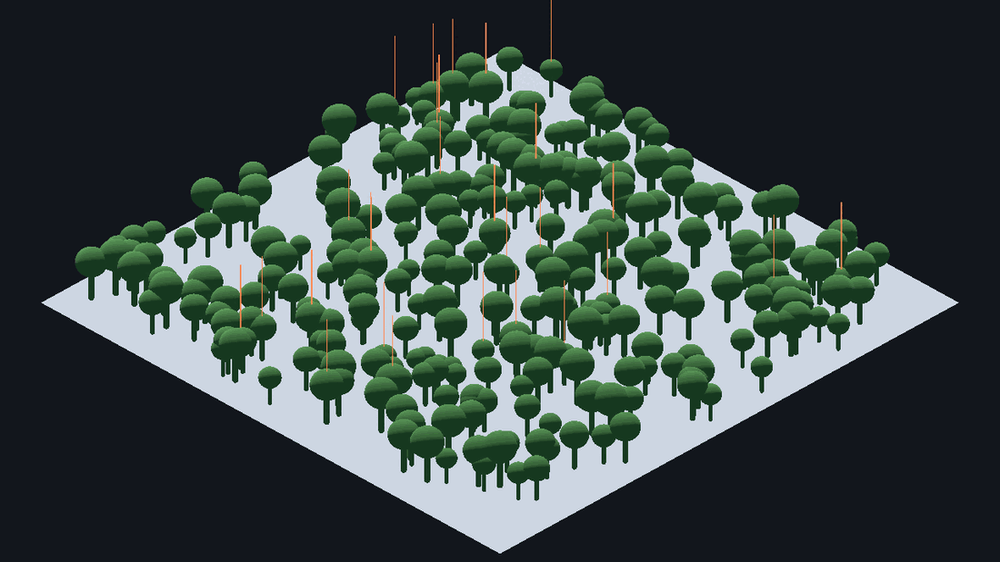

같은 메시를 드로우콜 1회로 그리는 장치. 씬을 처음부터 만드는 법부터, 뿌린 것들이 왜 물리 세계에 없는지, 그리고 콜리전을 붙이는 여섯 가지 방법까지 — 전부 직접 돌려 확인했다.
나무 300그루를 놓은 같은 장면이다. 화면은 똑같다. 다른 것은 노드 수와 드로우콜, 그리고 물리의 유무다.


처음 만지면 여기서 한 번 헷갈린다.
MultiMeshInstance3D 노드 — 씬의 어디에 놓을지, 어느 레이어에 그릴지
└ multimesh: MultiMesh 리소스 — 메시 1개 + 인스턴스 N개의 변환 배열
├ mesh: Mesh 무엇을 그리는가 (모든 인스턴스가 공유)
├ transform_format TRANSFORM_3D / TRANSFORM_2D
├ instance_count 몇 개인가
├ visible_instance_count 그중 몇 개를 그릴 것인가 (−1 = 전부)
├ use_colors 인스턴스마다 색을 다르게 줄 것인가
└ use_custom_data 셰이더로 넘길 4채널 값을 쓸 것인가
MultiMeshInstance3D 를 씬에 추가하면 multimesh 칸이
<empty> 다. Populate Surface 를 쓰면 자동으로 채워지고,
코드로 만들 때는 MultiMesh.new() 를 넣어 줘야 한다.
Populate Surface 를 쓰려면 노드 셋이 한 씬 안에 있어야 한다. 하나라도 빠지면 다이얼로그가 열리지 않거나 거절당한다.
| 역할 | 노드 타입 | 하는 일 |
|---|---|---|
| Target Surface | 🛑 MeshInstance3D | 인스턴스가 놓일 바닥. 면이 있어야 한다 |
| Source Mesh | 🛑 MeshInstance3D | 복제할 것 (나무 1그루) |
| 결과 | MultiMeshInstance3D | 뿌려진 결과가 담긴다 |
1. Scene ▸ New Scene ▸ 3D Scene 루트가 Node3D 로 생긴다
2. 루트 우클릭 ▸ Add Child Node
MeshInstance3D → Inspector ▸ Mesh ▸ New PlaneMesh (30 × 30) … 바닥
DirectionalLight3D … 빛
Camera3D … 시점
MultiMeshInstance3D … 결과
3. 바닥에 콜리전을 준다 (캐릭터가 서 있으려면 필요하다)
바닥 선택 ▸ 툴바 Mesh ▸ Create Collision Shape
Placement = Static Body Child · Type = Trimesh → Create
4. 뿌릴 나무를 씬에 넣는다 ← 여기서 대부분 막힌다
5. MultiMeshInstance3D 선택 ▸ 툴바 MultiMesh ▸ Populate Surface
6. Ctrl/Cmd + S 로 저장.glb 를 넣었다면 한 단계가 더 있다
.glb 를 FileSystem 에서 뷰포트로 끌어다 놓으면 씬 트리에 이렇게 들어온다.
이 노드를 Source Mesh 로 고르면 거절당한다 — 타입이 Node3D 이기 때문이다.
Surface source is invalid (not a MeshInstance3D).메시는 그 안쪽에 있는데, 인스턴스는 기본적으로 내부가 접혀 있어 보이지 않는다. 꺼내는 방법은 둘이다.
| 방법 | 어떻게 | 결과 | 언제 |
|---|---|---|---|
| Editable Children | 인스턴스 우클릭 ▸ Editable Children 체크 | 자식이 펼쳐진다. 이름이 다른 색으로 표시된다(원본 씬 소유라는 뜻) | 원본 .glb 와의 연결을 유지하고 싶을 때 |
| Make Local | 인스턴스 우클릭 ▸ Make Local | 인스턴스 연결이 끊기고 평범한 노드 묶음이 된다 | 이 씬에서만 자유롭게 고칠 때 |
Editable Children 을 켜면 이렇게 된다:
이름 색이 다른 이유 — 그 노드는 원본 씬이 소유한다. 값을 바꾸면 되돌리기 화살표가 뜨고, 원본
.glb를 다시 임포트하면 덮어써진다.
MultiMeshInstance3D 를 인스턴스 안에 넣지 않는다
Editable Children 을 켜 두면 인스턴스 안에도 노드를 추가할 수 있다.
하지만 그렇게 하지 않는다.
Node3D
└── grass-trees2 (인스턴스)
├── grass-trees
└── MultiMeshInstance3D ← 안쪽Node3D
├── grass-trees2 (인스턴스)
│ └── grass-trees ← Source 로만
└── MultiMeshInstance3D ← 루트 아래| 왜 |
|---|
인스턴스 안의 노드는 원본 씬 구조에 얹힌 덧붙임이라, 원본 .glb 를 다시 임포트하거나 구조가 바뀌면 자리를 잃거나 사라질 수 있다 |
| 인스턴스의 transform 이 결과 전체에 곱해진다 — 나무 한 그루를 옮겼을 뿐인데 뿌린 숲이 통째로 움직인다 |
| 나중에 Source Mesh 를 지우고 싶어도 MultiMesh 가 그 안에 있어 같이 지워진다 |
결과 노드는 항상 바깥에, 뿌릴 좌표의 기준이 되는 자리에 둔다.
다 뿌린 뒤 Source Mesh 노드는 지워도 된다 — 변환 배열은 이미
MultiMesh 리소스 안에 복사됐다.
1. 씬 트리에서 MultiMeshInstance3D 를 클릭해 선택한다
🛑 선택하지 않으면 툴바에 MultiMesh 메뉴가 나타나지 않는다
2. 3D 뷰포트 상단 툴바 ▸ MultiMesh → 클릭
3. Populate Surface
4. Target Surface ▸ [..] → 바닥 MeshInstance3D → OK
5. Source Mesh ▸ [..] → 나무 MeshInstance3D → OK
6. Amount 등을 정한다
7. Populate| 필드 | 기본값 | 하는 일 |
|---|---|---|
| Target Surface | — | 삼각형을 면적 가중치로 뽑아 그 위 임의의 점에 놓는다 |
| Source Mesh | — | 복제할 메시 |
| Mesh Up Axis | Y-Axis | 소스 메시의 위쪽 축. 나무가 누워서 심기면 여기 |
| Random Rotation | 0 | 위 축 기준 무작위 회전 — 복제한 티를 지운다 |
| Random Tilt | 0 | 옆으로 기울이기 |
| Random Scale | 0.0 | 크기 무작위 폭 |
| Scale | 1.0 | 기본 크기 |
| Amount | 128 | 개수 |
| 증상 | 원인 |
|---|---|
툴바에 MultiMesh 메뉴가 없다 | MultiMeshInstance3D 를 선택하지 않았다 |
Surface source is invalid (not a MeshInstance3D). | 고른 노드가 MeshInstance3D 가 아니다 → ② 의 Editable Children |
Surface source is invalid (no faces). | 바닥 메시에 면이 없다 |
No mesh source specified… | Source Mesh 를 안 골랐거나 그 노드의 Mesh 가 비어 있다 |
| 나무가 누워서 심긴다 | Mesh Up Axis 를 소스 메시에 맞춘다 |
| 다시 Populate 했더니 더해지지 않는다 | 정상이다. 덮어쓴다 |
| 뿌린 나무가 전부 같은 방향 | Random Rotation 을 올린다 |
| 뿌리기 전 | 뿌린 뒤 | 변화 | |
|---|---|---|---|
| Objects | 23 | 24 | +1 (노드 1개) |
| Primitives | 12,045 | 18,310 | +6,265 (삼각형은 실제로 늘어난다) |
| Draw Calls | 23 | 24 | +1 |
나무가 3그루든 300그루든 드로우콜은 +1 이다. 이것이 MultiMesh 를 쓰는 유일한 이유다. 반대로 삼각형은 전혀 줄지 않는다.
원본 나무에 Mesh ▸ Create Collision Shape ▸ Capsule 로
StaticBody3D 를 만들어 두어도, 뿌린 인스턴스에는 충돌이 생기지 않는다.
버그가 아니다. 이유는 하나다 —
MultiMesh 는 렌더링 서버의 자료구조다. 물리 서버는
CollisionObject3D 를 상속한 노드만 안다. 그리고
Populate Surface 는 Mesh 리소스만 복사하므로,
원본 씬 트리에 매달린 StaticBody3D 는 구조적으로 따라올 수가 없다.
에디터 플러그인 소스에도 콜리전을 만드는 코드가 한 줄도 없다.
godot --headless --path . -s res://tests/multimesh_collision_probe.gd=== Godot 4.7.2-stable (official) ===
[A] MultiMeshInstance3D 인스턴스에 물리가 있는가
instance_count = 3 · 노드 수 = 1
✅ 인스턴스 0 (x=0) 에 레이 — 기대 충돌없음 / 실제 충돌없음
✅ 인스턴스 1 (x=10) 에 레이 — 기대 충돌없음 / 실제 충돌없음
✅ 인스턴스 2 (x=20) 에 레이 — 기대 충돌없음 / 실제 충돌없음
[B] 원본에 StaticBody3D 를 두면 인스턴스에도 생기는가
✅ 원본에 레이 — 기대 충돌함 / 실제 충돌함
✅ MultiMesh 사본 (x=-40) 에 레이 — 기대 충돌없음 / 실제 충돌없음
✅ MultiMesh 사본 (x=-60) 에 레이 — 기대 충돌없음 / 실제 충돌없음
[C] GridMap + MeshLibrary(shape 포함) 는 콜리전이 자동으로 생기는가
✅ 셀 0 (x=0) 에 레이 — 기대 충돌함 / 실제 충돌함
✅ 셀 1 (x=4) 에 레이 — 기대 충돌함 / 실제 충돌함
✅ 셀 2 (x=8) 에 레이 — 기대 충돌함 / 실제 충돌함
실패 0 건[B] 가 답이다 — 원본만 충돌하고 사본은 통과한다.
엔진 내장에는 "원본 콜리전을 인스턴스에 자동 복제" 하는 버튼이 없다. 제안 #10828 은 2024-09-26 에 열린 뒤 아직 open 이고 담당자도 없다.
먼저 두 갈래를 구분해야 한다.
[한꺼번에 붙인다] 인스턴스 N개에 대응하는 shape N개를, 바디 1개에 몰아 넣는다
→ 방법 A · B · C · D. 노드 수가 폭발하지 않는다
[하나씩 붙인다] 인스턴스마다 StaticBody3D 를 따로 만든다
→ 방법 E. MultiMesh 를 쓰는 의미가 절반 사라진다| # | 방법 | 클릭만으로? | 드로우콜 | 만드는 노드 | 에디터에 보이나 | 언제 |
|---|---|---|---|---|---|---|
| A | ProtonScatter + Keep Static Colliders | ✅ 체크박스 하나 | 1 | 0 | ❌ | 자유 배치 + 충돌 |
| B | GridMap + MeshLibrary (내장) | ✅ 된다 | 배칭됨 | 0 | ✅ | 격자에 놓아도 되는 것 |
| C | 스크립트 — StaticBody3D 1개 + CollisionShape3D N개 | ❌ 코드 | 1 | N+1 | ✅ | 디버그 뷰로 보고 싶을 때 |
| D | 스크립트 — PhysicsServer3D 직접 | ❌ 코드 | 1 | 0 | ❌ | 인스턴스가 아주 많을 때 |
| E | 충돌이 필요한 것만 개별 노드 | ✅ | 개수만큼 | N | ✅ | 큰 나무 수십 그루 |
| F | 콜리전을 안 준다 / 넓게 뭉뚱그린다 | ✅ | 1 | 0~1 | ✅ | 풀·꽃·자갈·먼 배경 |
StaticBody3D 1개 + CollisionShape3D N개가장 이해하기 쉽고, 에디터 디버그 뷰에서 눈으로 확인된다.
# MultiMeshInstance3D 아래에 바디 하나를 두고, 인스턴스마다 shape 노드를 붙인다
var body := StaticBody3D.new()
mmi.add_child(body) # MultiMesh 와 같은 좌표계에 둔다
var shape := CapsuleShape3D.new() # 🛑 shape 리소스는 하나만 만들어 공유한다
shape.radius = 0.45
shape.height = 3.2
for i in mmi.multimesh.instance_count:
var col := CollisionShape3D.new()
col.shape = shape # 같은 리소스를 N개가 함께 쓴다 (메모리 1벌)
col.transform = mmi.multimesh.get_instance_transform(i)
body.add_child(col)PhysicsServer3D 에 직접 등록노드를 하나도 만들지 않는다. ProtonScatter 가 내부에서 쓰는 방식이다.
# 바디 하나를 물리 서버에 직접 만든다
var body_rid := PhysicsServer3D.body_create()
PhysicsServer3D.body_set_mode(body_rid, PhysicsServer3D.BODY_MODE_STATIC)
PhysicsServer3D.body_set_space(body_rid, get_world_3d().space)
PhysicsServer3D.body_set_state(
body_rid, PhysicsServer3D.BODY_STATE_TRANSFORM, mmi.global_transform)
# shape 도 하나만 만들어 N번 재사용한다
var shape_rid := PhysicsServer3D.capsule_shape_create()
PhysicsServer3D.shape_set_data(shape_rid, {"radius": 0.45, "height": 3.2})
for i in mmi.multimesh.instance_count:
PhysicsServer3D.body_add_shape(
body_rid, shape_rid, mmi.multimesh.get_instance_transform(i))
# 🛑 RID 는 직접 지운다. 노드가 아니라서 queue_free() 가 챙겨 주지 않는다
# PhysicsServer3D.free_rid(body_rid)
# PhysicsServer3D.free_rid(shape_rid)레이어를 잊지 말 것 —
body_create()의 기본 레이어는 1이다.PhysicsServer3D.body_set_collision_layer(body_rid, 원하는_비트)를 반드시 부른다.
godot --headless --path . -s res://tests/mm_add_collision_probe.gd=== Godot 4.7.2-stable (official) · MultiMesh 에 콜리전 붙이기 실측 ===
[기준선] MultiMesh 만 놓았을 때
✅ 레이 24발 중 0발 명중 · 만들어진 노드 0개
[방법 C] StaticBody3D 1개 + CollisionShape3D N개
노드가 보이고 Debug ▸ Visible Collision Shapes 로 확인된다
✅ 레이 24발 중 24발 명중 · 만들어진 노드 25개
[방법 D] PhysicsServer3D 에 shape 을 직접 등록 (ProtonScatter 방식)
노드가 0개다. 그래서 Debug 뷰에도 안 보인다
✅ 레이 24발 중 24발 명중 · 만들어진 노드 0개
실패 0 건🛑 방법 E 를 고를 때의 판단
"인스턴스마다StaticBody3D를 하나씩" 은 MultiMesh 를 쓰는 의미를 절반 없앤다. 드로우콜은 1로 남지만 노드 수·메모리·씬 트리 부담이 개별 배치와 같아진다. 충돌이 필요한 것이 수십 개뿐이라면 애초에 MultiMesh 를 쓰지 말고 개별 노드로 두는 편이 낫다.
"원본 씬에 콜리전을 넣어 두면 뿌린 전부에 자동으로 생긴다" 를 체크박스 하나로 해 주는 유일한 도구다. 엔진 기능이 아니라 애드온 (HungryProton/scatter)이다.
MultiMesh 인스턴스를 채우는 바로 그 루프가, 같은 Transform3D 로
물리 서버에 shape 을 등록한다. 즉 ⑤ 의 방법 D 를 애드온이 대신 해 주는 것이다.
# scatter.gd:74-76 — 프로퍼티 선언
## If enabled, creates static collision shapes for scattered objects.
## Uses the Physics server directly instead of creating actual collision nodes
@export var keep_static_colliders := false
# scatter.gd:45-51 — render_mode 의 의미
## Use Instancing (0): Uses MultiMesh instances for efficient rendering…
## Create Copies (1): Creates individual node copies for each scattered object.
## Use Particles (2): Uses GPU particles system for very large numbers of objects.
# scatter.gd:448-450 — 결정적. 렌더와 물리가 같은 t 를 쓴다
t = item.process_transform(transforms.list[offset + i])
mmi.multimesh.set_instance_transform(i, t) # 렌더
_create_collision(static_body, t) # 물리
# scatter.gd:609-611 — MultiMesh 모드(0)에서 작동한다. 끄는 것은 1(Create Copies)뿐
func _create_collision(body: StaticBody3D, t: Transform3D) -> void:
if not keep_static_colliders or render_mode == 1:
return지원 shape 은 Sphere · Box · Capsule · Cylinder · ConcavePolygon · ConvexPolygon · HeightMap · SeparationRay.
⚠️ 공식 위키는 이 기능을 모른다. 위키에는 "Multimesh mode … colliders are ignored" 라고 적혀 있지만
keep_static_colliders가 생기기 전에 쓰인 문서다. 소스가 정본이다. (최신 커밋 2026-07-26 "fix compatibility issue with 4.7" ·plugin.cfg4.2.0)
[설치]
방법 A 에디터 ▸ AssetLib 탭 ▸ "ProtonScatter" 검색 ▸ Download ▸ Install
방법 B 저장소를 받아 addons/proton_scatter/ 에 직접 넣는다 (버전 고정 벤더링)
그다음 Project ▸ Project Settings ▸ Plugins ▸ ProtonScatter 를 Enable| 인스펙터에서 켤 것 | 값 |
|---|---|
ProtonScatter ▸ Render Mode | Use Instancing (= MultiMesh) |
ProtonScatter ▸ Keep Static Colliders | ✅ 체크 ← 이 한 번이 전부다 |
가장 많이 막히는 곳이다. ProtonScatter 는 "몇 개를 어디에 놓을지" 를
Modifier Stack 에서 정한다. 비어 있으면 인스턴스가 0개이고
화면에 아무것도 안 보인다. 인스펙터 아래쪽 Modifier Stack 에서
+ 를 눌러 최소 두 개를 넣는다.
| Modifier | 하는 일 |
|---|---|
| Create Inside (Random) | 영역 안에 무작위로 N개 생성 (Amount 로 개수) |
| Randomize Transforms | 회전·크기를 흩는다 (Rotation 을 0, 360, 0 으로) |
자주 함께 쓰는 것 — Project On Geometry(지면에 붙이기) ·
Relax(간격 고르게) · Create Inside (Poisson)(겹치지 않게).
PhysicsServer3D 에 직접 등록하므로
Debug ▸ Visible Collision Shapes 를 켜도 안 보인다.
소스 주석에 그렇게 적혀 있다. 확인 방법은 실제로 걸어가서 부딪혀 보는 것뿐이다.
scale 이 버려진다
ProtonScatter 는 원본 씬에서 MeshInstance3D 와 CollisionShape3D 를
재귀로 찾아 그 노드 자신의 transform 만 살린다.
그 사이 부모 노드의 transform 은 전부 버려진다. 루트도 초기화된다.
MMTree
└── Body (scale = 5) ← 버려진다
└── MeshInstance3DMMTree
├── Visual (MeshInstance3D) ← 크기를 메시에
└── StaticBody3D
└── CollisionShape3DSource Scale Multiplier 로 키우면 콜리전이 따라오지 않는다godot --headless --path . -s res://tests/protonscatter_collision_probe.gd[A. keep_static_colliders = false] 레이 12발 중 0발 명중 ✅ 콜리전 없음
[B. keep_static_colliders = true] 레이 12발 중 12발 명중 ✅ 콜리전 있음
콜리전 윗면 높이 ≈ 2.27 m
[C. B + source_scale_multiplier = 4] 레이 12발 중 0발 명중 ✅ 실측된 한계
실패 0 건크기는 원본 씬에서 정한다. Source Scale Multiplier 는 보기에만 쓴다.
소스 전체에 body_set_collision_layer 호출이 0회다.
전부 기본 레이어로 들어간다. 레이어로 구분하는 프로젝트라면
이것이 곧바로 문제가 된다 — 예를 들어 클릭 레이캐스트가 마스크를 잠그지 않았다면
나무를 클릭했을 때 나무 표면이 목표가 된다.
내장만으로 "노드 1개 + 콜리전 자동" 을 얻는 유일한 경로다.
핵심은 MeshLibrary 아이템이 shape 을 들고 있는 것 하나뿐이다.
엔진 소스(grid_map.cpp _octant_update())가 같은 함수 안에서
multimesh_create() 로 배칭하면서
body_add_shape(g.static_body, …) 로 콜리전을 만든다.
[준비 씬] 아이템마다 이 형식으로 만든다
Tree (MeshInstance3D) ← 이 노드 이름이 아이템 이름이 된다
└ StaticBody3D ← Mesh ▸ Create Collision Shape ▸ Static Body Child
└ CollisionShape3D
[내보내기] Scene ▸ Export As... ▸ MeshLibrary... → tree_library.tres
[쓰기] GridMap 추가 ▸ Inspector ▸ Mesh Library 지정
▸ 아래 팔레트에서 아이템을 고르고 뷰포트를 클릭해 배치🛑 이 형식만 인식된다. 공식 문서 원문 — 아이템은
MeshInstance3D여야 하고 "Have up to one StaticBody3D child, for collision. The StaticBody3D should have one or more CollisionShape3D children." + "Only this specific format is recognized."
코드로 만들 때는 이 한 줄이 전부다:
var lib := MeshLibrary.new()
lib.create_item(0)
lib.set_item_name(0, "tree")
lib.set_item_mesh(0, tree_mesh)
# [shape, transform] 순서로 넣는다 — 이것이 GridMap 콜리전의 전부다
lib.set_item_shapes(0, [capsule_shape, Transform3D(Basis(), Vector3(0, 1.6, 0))])| ✅ 얻는 것 | 🛑 잃는 것 |
|---|---|
| 콜리전 자동 · octant 단위 배칭 · 노드 1개 · 내비메시도 가능 | 격자에만 놓인다 · 회전은 직교 24방향만 · 인스턴스별 크기 무작위 불가 |
판단 기준 하나 — "격자에 놓여도 어색하지 않은가?" 건물·바닥·벽·울타리·가로등은 ✅. 자연스러운 숲은 ❌.
| 함정 | 무슨 일이 일어나나 | 어떻게 |
|---|---|---|
| 컬링이 전부-아니면-전무 | 맵 전체를 MultiMesh 1개로 묶으면, 화면에 100그루만 보여도 5,000그루 전부를 GPU 로 보낸다 | 청크마다 MultiMesh 를 나눈다 |
| LOD 가 전부 같은 단계 | 거리와 무관하게 인스턴스 전부가 같은 LOD 로 그려진다 | 청크 분할로 완화된다 |
| 삼각형은 줄지 않는다 | MultiMesh 는 드로우콜을 줄이는 것이지 삼각형을 줄이지 않는다 | 삼각형은 LOD·임포스터로 |
공식 문서 원문 — "there is no screen or frustum culling possible for individual instances. This means, that millions of objects will be always or never drawn"
저장소의 scenes/demo/multimesh/ 에 실습 씬이 있다.
에디터에서 열어 F5 로 실행한다. 방향키로 이동, 마우스 휠로 줌.
주황색 캡슐이 사람이고, 화면 왼쪽 위에 실시간 드로우콜·삼각형·FPS 가 뜬다.
| 순서 | 씬 | 무엇을 보나 |
|---|---|---|
| ① | 01_basics.tscn | 왼쪽 MeshInstance3D 300개 vs 오른쪽 MultiMeshInstance3D 1개 — 드로우콜 차이 |
| ② | 02_populate.tscn | Populate Surface 를 직접 눌러 본다. 재료만 들어 있다 |
| ③ | 03_collision.tscn | 🛑 핵심. 왼쪽 MultiMesh(통과) vs 오른쪽 ProtonScatter(막힘) |
| ④ | 04_gridmap.tscn | GridMap + MeshLibrary — 애드온 없이 콜리전 자동 |
🛑 드로우콜은 F5 로 실행해서 봐야 한다. 에디터 뷰포트의 숫자에는 기즈모·그리드가 섞인다.
사람이 걸어가 보기 전에 캐릭터와 똑같은 캡슐로 숲을 가로지르는 직선을 훑었다:
[왼쪽 MultiMesh] 숲 중심까지 4.5 m 를 훑었으나 걸리는 것이 없었다 ✅ 통과
[오른쪽 ProtonScatter] 출발 0.2 m 지점에서 막혔다 ✅ 막힘
실패 0 건이 페이지는 요약이다. 표·실측·코드 함정은 문서 쪽이 더 자세하다.